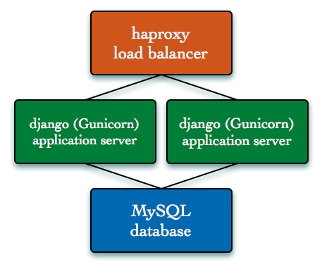

|
Build a Django application stack using Chef cookbooks available from the Cookbooks Community Site and Hosted Chef.The Walkthrough Guide assumes you followed the Fast Start Guide and have Chef installed and working with the Hosted Chef platform. At the end of this guide, you'll have four total Ubuntu 10.04 systems running in Amazon EC2.
If you don't already have an account with Amazon AWS, go to Amazon Web Sevices and click "Sign up". You'll need the access and secret access key credentials from the sign-up later.
We're going to reuse a number of cookbooks from the Cookbooks Community Site to build the environment. For example, the source code lives in git, so that cookbook will ensure Git is available. The load balancer is haproxy because it is very simple to deploy and configure, and we use a recipe that automatically discovers the Django application systems. The heavy lifting is handled by recipes in the application and database cookbooks. The application cookbook will perform the following steps:
|
Guide Based Upon Ubuntu 10.04 on Amazon AWS EC2 with Chef 0.10.0.Note: At this time, the steps described above have only been tested on the identified platform(s). Opscode has not researched and does not support alternative steps that may lead to successful completion on other platforms. Platform(s) supported by this guide may change over time, so please do check back for updates. If you'd like to undertake this guide on an alternate platform, you may desire to turn to open source community resources for support assistance.
|
|
 The django_cms cookbook does this work and creates an initial superuser for the CMS. This follows the recommended pattern of creating a cookbook named after the application that is being deployed for application-specific setup and configurations. Environment SetupFirst, let's configure the local workstation. Shell EnvironmentObtain the repository used for this guide. It contains all the components required. Use git: git clone git://github.com/opscode/django-quick-start.git Chef and KnifeUbuntu/Debian users: Install XML2 and XLST development headers on your system: sudo apt-get install libxml2-dev libxslt-dev All Users: You'll need some additional gems for Knife to launch instances in Amazon EC2: sudo gem install knife-ec2 As part of the Fast Start Guide, you cloned a chef-repo and copied the Knife configuration file (knife.rb), validation certificate (ORGNAME-validator.pem) and user certificate (USERNAME.pem) to ~/chef-repo/.chef/. Copy these files to the new django-quick-start repository. You can also re-download the Knife configuration file for your organization with the Hosted Chef Management Console. mkdir ~/django-quick-start/.chef
cp ~/chef-repo/.chef/knife.rb ~/django-quick-start/.chef
cp ~/chef-repo/.chef/USERNAME.pem ~/django-quick-start/.chef
cp ~/chef-repo/.chef/ORGNAME-validator.pem ~/django-quick-start/.chef
Add the Amazon AWS credentials to the Knife configuration file. vi ~/django-quick-start/.chef/knife.rb Add the following two lines to the end: knife[:aws_access_key_id] = "replace with the Amazon Access Key ID"
knife[:aws_secret_access_key] = "replace with the Amazon Secret Access Key ID"
Once the django-quick-start and knife configuration is in place, we'll work from this directory. cd django-quick-start Amazon AWS EC2In addition to the credentials, two additional things need to be configured in the AWS account. Configure the default security group to allow incoming connections for the following ports.
Add these to the default security group for the account using the AWS Console. 1. Sign into the Amazon AWS Console. Create an SSH Key Pair and save the private key in ~/.ssh. 1. In the AWS Console, click on "Key Pairs" in the left sidebar. mv ~/Downloads/django-quick-start.pem ~/.ssh
chmod 600 ~/.ssh/django-quick-start.pem
Acquire CookbooksThe django-quick-start has all the cookbooks we need for this guide. They were downloaded along with their dependencies from the cookbooks site using Knife. These are in the cookbooks/ directory. apt
git
application
database
haproxy
A single new non-community cookbook was also created for this quick-start. This django_cms cookbook contains a recipe that is used to bootstrap our database and create the initial superuser. This follows the recommended pattern of creating a cookbook named after the application which contains application specific setup and configurations. django_cms Upload all the cookbooks to Hosted Chef. knife cookbook upload -a Server RolesAll the required roles have been created in the django-quick-start repository. They are in the roles/ directory. base.rb
django_cms_database_master.rb
django_cms.rb
django_cms_load_balancer.rb
Upload all the roles to Hosted Chef. rake roles Data Bag ItemThe django-quick-start repository contains a data bag item that has all the information required to deploy and configure the Django CMS application from source using the recipes in the application and database cookbooks. The data bag name is apps and the item name is django_cms. Upload this to Hosted Chef. knife data bag create apps
knife data bag from file apps django_cms.json
Decision TimeIt is time for you to decide whether you want a single instance running Django CMS, or a few instances as a small infrastructure. In either case, we're going to use m1.small instances with the 32 bit Ubuntu 10.04 image provided by Canonical. The identifier is ami-7000f019 for the AMI in us-east-1 with instance storage that we will use in this guide. We'll show you the knife ec2 server create sub-command to launch instances. This command will:
See the appropriate section below for instruction on launching a single instance, or launching the multi-system infrastructure. Launch Single InstanceLaunch the entire stack on a single instance. knife ec2 server create -G default -I ami-7000f019 -f m1.small \
-S django-quick-start -i ~/.ssh/django-quick-start.pem -x ubuntu \
-r 'role[base],role[django_cms_database_master],role[django_cms],recipe[django_cms::db_bootstrap],role[django_cms_load_balancer]'
Once complete, the instance will be running MySQL and Django CMS under Gunicorn. With only one system, a load balancer is unnecessary. Launch Multi-instance InfrastructureWe will launch one database server, two application servers and one load balancer. One of the application server instances will include the role for setting up the database as discussed before. First, launch the database instance. knife ec2 server create -G default -I ami-7000f019 -f m1.small \
-S django-quick-start -i ~/.ssh/django-quick-start.pem -x ubuntu \
-r 'role[base],role[django_cms_database_master]'
Once the database master is up, launch one node that will set up the database with default data. knife ec2 server create -G default -I ami-7000f019 -f m1.small \
-S django-quick-start -i ~/.ssh/django-quick-start.pem -x ubuntu \
-r 'role[base],role[django_cms],recipe[django_cms::db_bootstrap]'
Launch the second application instance w/o the django_cms::db_bootstrap recipe. knife ec2 server create -G default -I ami-7000f019 -f m1.small \
-S django-quick-start -i ~/.ssh/django-quick-start.pem -x ubuntu \
-r 'role[base],role[django_cms]'
Once the second application instance is up, launch the load balancer. knife ec2 server create -G default -I ami-7000f019 -f m1.small \
-S django-quick-start -i ~/.ssh/django-quick-start.pem -x ubuntu \
-r 'role[base],role[django_cms_load_balancer]'
Once complete, we'll have four instances running in EC2 with MySQL, Django CMS and haproxy up and available to serve traffic. VerificationKnife will output the fully qualified domain name of the instance when the commands complete. Navigate to the public fully qualified domain name on port 80. http://ec2-xx-xxx-xx-xxx.compute-1.amazonaws.com/ The login is admin and the password is djangocms. You can access the haproxy admin interface at: http://ec2-xx-xxx-xx-xxx.compute-1.amazonaws.com:22002/ AppendixDatabase PasswordsThe data bag item for dbapp contains default passwords that should certainly be changed to something stronger. The passwords in the dbapp Data Bag Item are set to the values show below: "mysql_root_password": {
"_default": "mysql_root"
},
"mysql_debian_password": {
"_default": "mysql_debian"
},
"mysql_repl_password": {
"_default": "mysql_repl"
},
To change the password to something stronger, modify mysql_root, mysql_debian, mysql_repl values. Something like the following secure passwords: vi data_bags/apps/dbapp.json
"mysql_root_password": {
"_default": "super_s3cur3_r00t_pw"
},
"mysql_debian_password": {
"_default": "super_s3cur3_d3b1@n_pw"
},
"mysql_repl_password": {
"_default": "super_s3cur3_r3pl_pw"
},
Once the entries are modified, simply load the data bag item from the json file: knife data bag from file apps dbapp.json Non-EC2 SystemsFor people not using Amazon EC2, other Cloud computing providers can be used. Supported by knife and fog as of this revision:
See the Launch Cloud Instances with Knife for more information about using Knife to launch these instance types. For people not using cloud at all, but have their own infrastructure and hardware, use the Knife Bootstrap knife command. Note that the run-list specification is slightly different. For the first example of the single instance: knife bootstrap IPADDRESS
-r 'role[base],role[dbapp_database_master],role[dbapp],recipe[dbapp::db_bootstrap],role[dbapp_load_balancer]'
See the contextual help for knife bootstrap on the additional options to set for SSH. knife bootstrap --help A Note about EC2 InstancesWe used m1.small instances. This is a low performance instance size in EC2 and just fine for testing. Visit the Amazon AWS documentation to learn more about instance sizes.
|

{kind=link}
{kind=link}